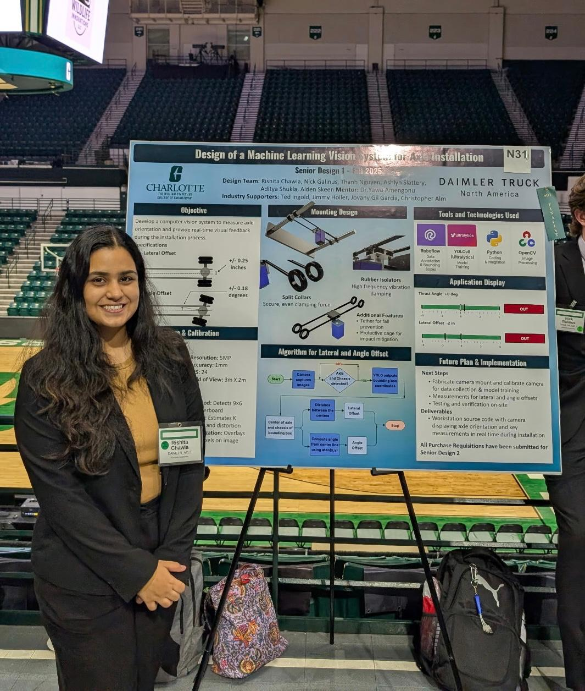
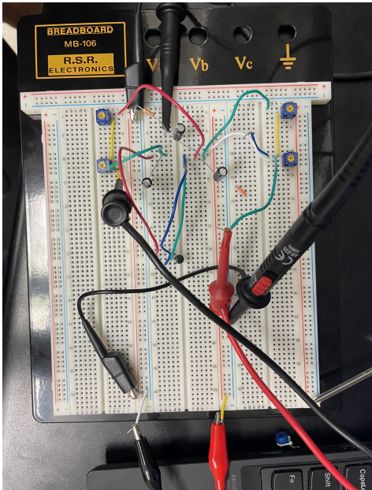
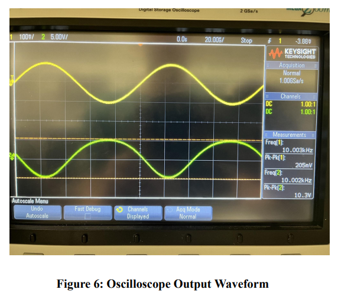
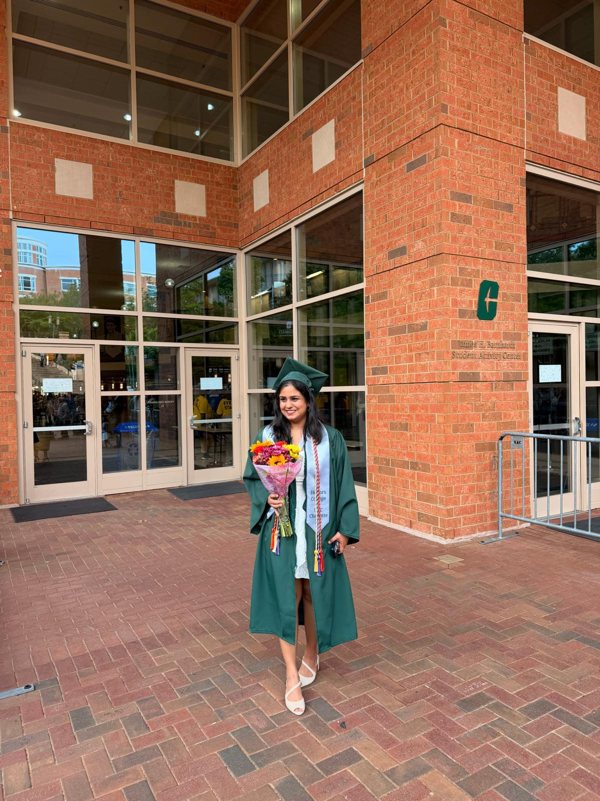
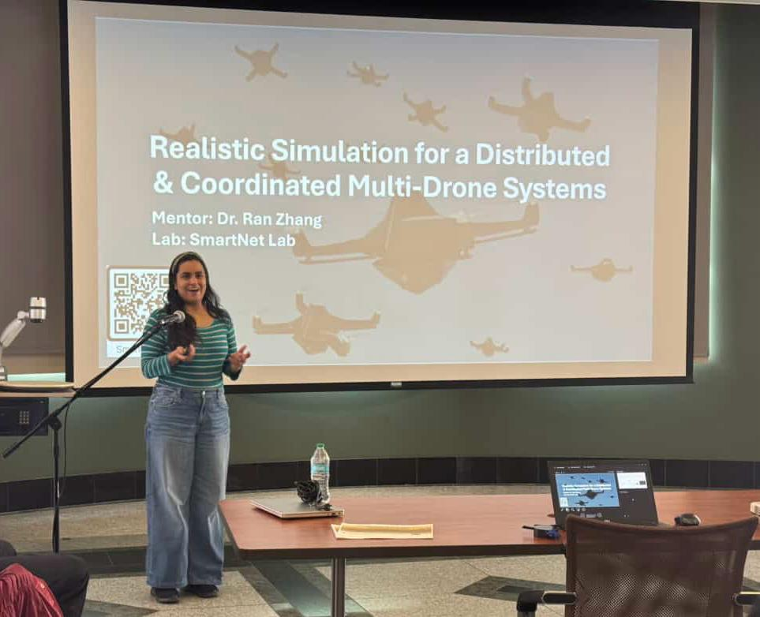
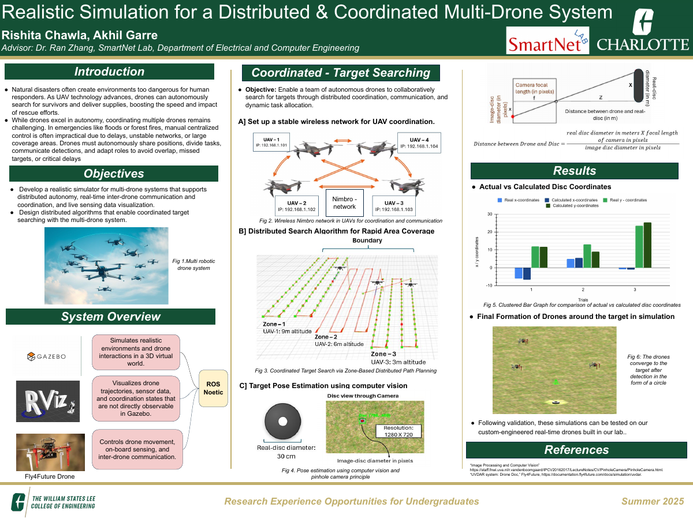
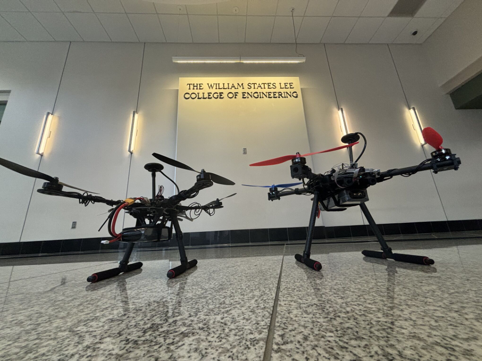

Boston, MA · Expected May 2028
Northeastern University
Master of Science in Artificial Intelligence
Robotics Concentration
Scholarships
International Impact Scholarship
Merit Scholarship
Hi, I’m Rishita Chawla, a master’s student at Northeastern University pursuing an M.S. in Artificial Intelligence with a Robotics concentration. I enjoy the intersection of robotics, hardware, physical AI and embedded systems.
I earned my B.S. in Computer Engineering from UNC Charlotte, graduating magna cum laude with Engineering Honors. During my undergraduate studies, I worked on drone simulations at SmartNet Labs, focusing on multi-drone coordination for target searching in search and rescue operations. I also gained experience in computer vision through my senior design project with Daimler Truck North America in their manufacturing plant. These experiences, alongside coursework in electronics and embedded systems, shaped my interests and built the foundation for my master’s studies.
Actively seeking Summer 2027 internships.
Explore my GitHub ↗
Master of Science in Artificial Intelligence
Robotics Concentration
International Impact Scholarship
Merit Scholarship
Bachelor of Science in Computer Engineering
GPA: 3.8 · Magna Cum Laude · Engineering Honors
Vice President, IEEE Women in Engineering
College of Engineering Ambassador
Software, sensing and the hardware underneath.
ROS / ROS2 · Gazebo · RViz
OpenCV · YOLOv11
Instance segmentation
GPS / IMU integration
STM32 · ESP32-S3-EYE
NVIDIA Jetson · Arduino
FreeRTOS · CMSIS-RTOS2
GPIO · PWM · UART
I²C · SPI · CAN
PyTorch · TensorFlow
Keras · scikit-learn
TensorFlow Lite
CUDA-accelerated inference
Python · C / C++ · Embedded C
Java · MATLAB · SQL
NumPy · Pandas · Matplotlib
Seaborn · Git · Linux
A real-time computer vision system that measures axle alignment and helps make industrial inspections faster.
My contribution: Led a six-person team, developed the vision pipeline using 10,000+ annotated images, trained YOLOv11 instance segmentation models with data augmentation and implemented camera calibration and pixel-to-mm measurement.
Results: 98% axle and 95% chassis detection accuracy; Jetson deployment supported 40% faster inspections.
Pipeline: Camera → instance segmentation → calibrated measurements → alignment verification.
Three drones, distributed search areas and a shared mission: find and localize targets more efficiently in simulation.
My contribution: Developed ROS coordination with TCP/IP communication, distributed task allocation, coverage path planning and area partitioning.
Perception: Integrated GPS, IMU and camera data with coordinate transformations and quaternion-based orientation handling.
Results: 90% detection accuracy and 0.3 m localization error, validated in Gazebo and RViz simulation.
Currently pursuing my master’s degree and developing research and projects in AI & Robotics.
Real-time keyword recognition on ESP32-S3-EYE, bringing deep learning inference onto constrained hardware.
My contribution: Curated 500+ voice samples with pitch/time shifting and synthetic speech augmentation; benchmarked CNN, LSTM and GRU models in TensorFlow/Keras.
Deployment: Quantized to TensorFlow Lite and integrated inference on real hardware using Embedded C.
Results: 98% accuracy before quantization and 150 ms on-device inference latency.
A multithreaded STM32 application with a custom LCD driver, synchronized rendering and responsive input.
My contribution: Developed Render, Input and Logic threads, with queue-based communication and mutex-protected LCD access.
From scratch: Wrote a custom SPI1 RGB565 LCD driver, brought up a 240 × 320 display and streamed animated frame data for real-time rendering.
Focus: Peripheral integration, shared-resource synchronization and real-time application structure.
Built a breadboard game controller with an MSP430 microcontroller, translating physical inputs into airplane movement and shooting controls in a Python game.
Controller: Developed firmware in Embedded C using Code Composer Studio. Read potentiometer input on the MSP430 and sent control data over UART to move the airplane in the Python game.
Interaction: Configured the board’s button as the shooting control.
Integration: Built and tested the circuit on a breadboard, debugging serial communication and hardware-software interaction.
Built a churn prediction pipeline for 7,000+ customers, from feature engineering and model benchmarking to an interactive prediction application.
Model development: Applied feature engineering, SMOTE and multicollinearity analysis; benchmarked Random Forest, LightGBM and XGBoost using MLflow.
Application: Containerized the ML application with Docker, exposed REST API endpoints through FastAPI and built a Gradio interface for interactive churn predictions.
Designed, simulated and built a 2N7000 N-channel MOSFET amplifier, comparing theoretical calculations, Multisim simulation and laboratory measurements.
Design: Used hand calculations and DC bias analysis to select circuit components for a common-source amplifier.
Design specifications: 10 V/V gain, 20 kΩ load, ±10 V supply rails, power consumption ≤100 mW and output swing ≥10 V peak-to-peak.
Validation: Simulated the circuit in Multisim, constructed it in the laboratory and compared measured behavior with theoretical predictions.


A team UART design project combining serial communication, FIFO buffering and control logic. My contribution focused on the parameterized RAM module in VHDL.
My contribution — RAM design: Implemented a parameterized memory module in VHDL with configurable word size and address width. The default configuration stores 32 words of 8 bits each using a 5-bit address.
Read/write behavior: Writes occur on the rising clock edge when write_in is asserted. Reads are also clocked and gated by output_enable; the RTL drives high-impedance values when output is disabled. Address vectors are converted to unsigned integer indices using IEEE.NUMERIC_STD.
Memory structure: Defined a VHDL array with depth 2^ADDR_WIDTH and initialized its contents to zero. Separate clocked processes handle reading and writing.
Simulation coverage: The repository’s RAM testbench uses a 50 MHz clock and exercises writes and readbacks at addresses 0 and 1 with distinct bit patterns, followed by output-disable behavior.
Team system: The broader project includes UART transmit/receive modules, baud-rate generation, FIFO buffering and control subsystems, with component and subsystem testbenches.



